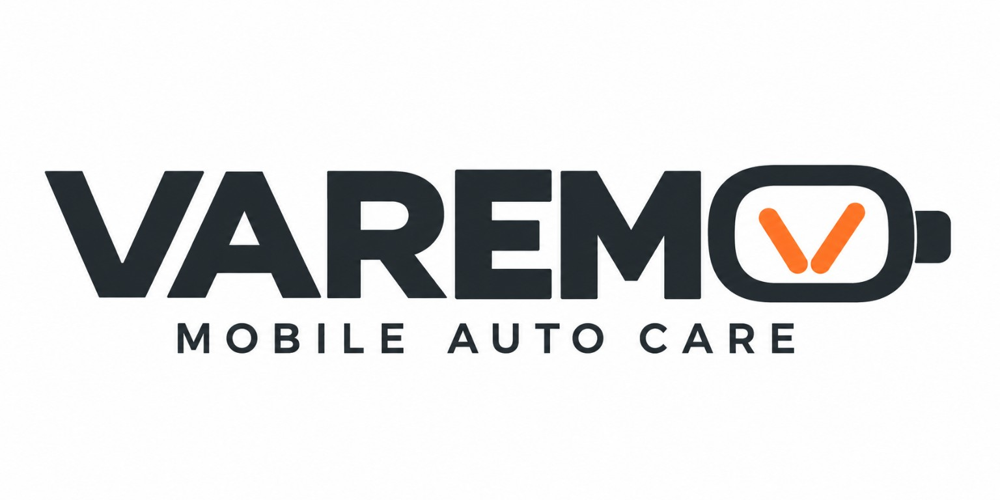
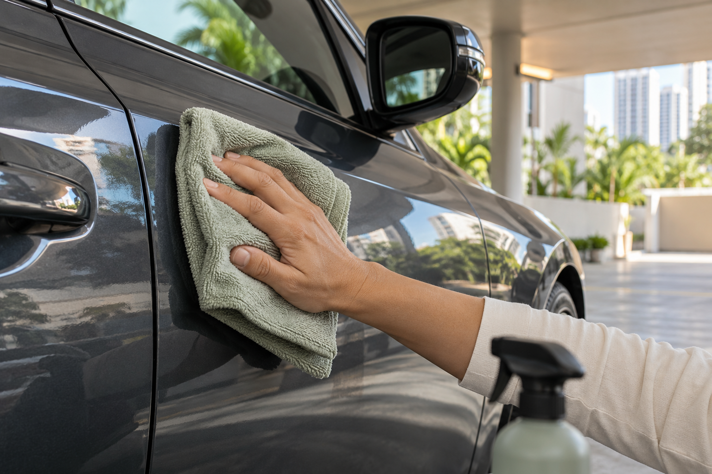
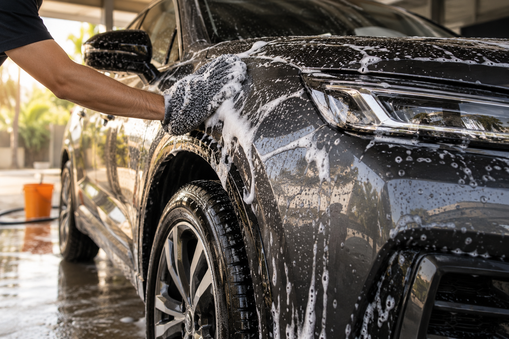

Carrocería
Limpieza exterior con el método acordado y acabado con microfibra.

WhatsAppLavado de autos a domicilio
Evita otra salida entre el tráfico.
Llevamos el lavado hasta tu casa o PH.
Estamos preparando el lanzamiento. Conoce Varemo y escríbenos para más información. La agenda aún no está abierta.
Lavado 24/7, de día o de noche. Tú eliges la hora, siempre con coordinación previa.

Aplicamos un producto específico que ayuda a desprender y lubricar la suciedad. Limpiamos por secciones, con microfibras limpias y sin enjuagar la carrocería con manguera.
Primero revisamos el estado del auto. El barro grueso, la arena o la suciedad muy adherida requieren limpieza previa y otro proceso. La suciedad moderada se evalúa antes de elegir este método.

Enjuague inicial, limpieza con champú automotriz, enjuague final y secado cuidadoso con microfibras. Revisamos la suciedad para definir el trabajo necesario.
Coordinamos el abastecimiento de agua, la electricidad que se necesite y un área donde esté permitido lavar, con drenaje adecuado.
Por servicio, en USD. Precio final sujeto a evaluación.
Lavado exterior + limpieza interior de mantenimiento.
Para que lavar tu auto no te sume otra salida entre el tráfico.
Cuidado por dentro y por fuera
Un servicio de mantenimiento para disfrutar un auto limpio en tu día a día.
Limpieza exterior con el método acordado y acabado con microfibra.
Limpieza de las superficies exteriores accesibles, según su estado.
Asientos, alfombras y pisos accesibles para retirar residuos sueltos.
Limpieza superficial con productos adecuados para cada material.
Limpieza interior y exterior para una terminación clara y cuidada.
Repaso de bordes y marcos accesibles. Cuidado hasta en lo pequeño.
El servicio base no incluye lavado profundo de tapicería, extracción de manchas, pulido, corrección de pintura ni lavado de motor. Pelos de mascota abundantes y suciedad excepcional se cotizan después de una evaluación.
Nacimos para hacerte el día más fácil
El tráfico ya ocupa parte de tu día. Varemo nace de una idea sencilla: que lavar tu auto no te sume otro traslado y otra espera.
Mientras trabajas, descansas o compartes en familia, nosotros nos ocupamos de su limpieza en el espacio que coordinemos contigo.
Costa del Este, Panamá
Zona inicial de atención. Consulta antes de coordinar en otras zonas.Antes de llegar a tu PH
Confirmamos la autorización, los horarios y las reglas de la administración.
Un área autorizada, accesible y con condiciones para trabajar.
Las acordamos según el método y el equipo. Con agua, confirmamos también el drenaje.
Prepara tu consulta
Estas tres preguntas te orientan sobre el servicio que estamos preparando. La agenda aún no está abierta.
Tu orientación inicial
Una opción de mantenimiento para polvo y suciedad ligera.
Confirmaremos el estado del auto y las condiciones del lugar.
Conocer el lanzamientoLa agenda aún no está abierta. Esta consulta no es una reserva.
Estamos preparando el lanzamiento. Puedes escribirnos para conocer la propuesta; todavía no confirmamos reservas.
Cuando abramos la agenda, podrás enviarnos por WhatsApp tu dirección o PH, el tipo de auto y la fecha y hora que prefieres. Si hace falta, te pediremos fotos para evaluar la suciedad.
Verificamos la agenda, el permiso del lugar y el espacio para trabajar. Coordinamos agua, electricidad y drenaje según el método.
Al abrir la agenda, acordaremos el método, el precio final y la duración aproximada. Cada cita se confirmará por WhatsApp con fecha, hora y condiciones del servicio.
Antes de tu lavado
Puedes pagar en efectivo, por Yappy o por transferencia bancaria. Coordinamos contigo los datos de pago por WhatsApp. Por ahora no aceptamos tarjetas.
No. Reprogramar no tiene costo. Escríbenos por WhatsApp y revisamos la disponibilidad de la agenda para acordar una nueva fecha y hora.
Cuando iniciemos, podrás solicitar un lavado a cualquier hora del día o de la noche, siempre con coordinación previa. Confirmaremos la disponibilidad de la agenda y la autorización del lugar antes de cada visita.
Cuando la suciedad es compatible, sí. El producto específico ayuda a desprender y lubricar la suciedad, que retiramos con microfibras limpias. No aplicamos este método directamente sobre barro grueso o arena acumulada.
Cualquier lavado por contacto requiere cuidado. La evaluación previa, la lubricación y el uso correcto de microfibras limpias ayudan a reducir el riesgo. Elegimos el método según el estado del auto.
Lo coordinamos antes de la cita. El lavado sin agua no requiere enjuagar la carrocería con manguera, pero el aspirado puede requerir electricidad. El lavado con agua necesita abastecimiento y drenaje adecuados.
La agenda aún no está abierta. Cuando iniciemos, acordaremos por WhatsApp la duración aproximada, el precio final, la fecha, la hora y las condiciones de acceso. La duración dependerá del tamaño, la suciedad y el método. Por ahora puedes consultar nuestra propuesta sin confirmar una reserva.
Revisamos si hay un área cubierta apropiada. Si el clima o las condiciones del espacio impiden trabajar, reprogramamos sin costo y acordamos otro horario según la disponibilidad de la agenda.
Nuestra zona de atención
Llevamos el lavado hasta tu casa o PH en Costa del Este. Tú sigues con tu día; nosotros nos ocupamos de tu auto.
24/7, siempre con coordinación previa.
Ver en Google Maps